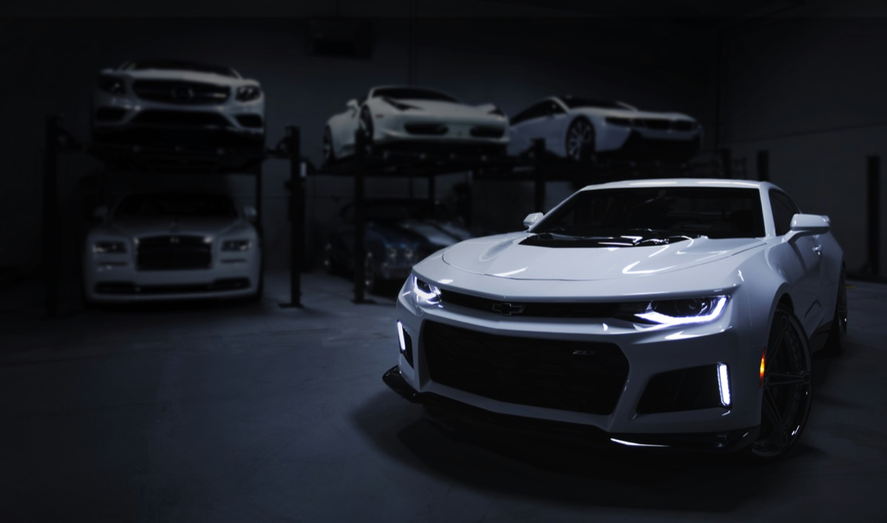

Features
On the road
Read a visual study of stance, lighting and changing road environments.
Compare the same car from the front quarter and rear quarter. Wheel position, ride height and overhang change its visual balance.
Next · Bodywork →
Anatomy of a corner
A parked car reveals a surprising amount about its design. Follow the line from the tyre contact patch through the wheel arch, then examine how the cabin sits relative to both axles.
Back to Torque GT →